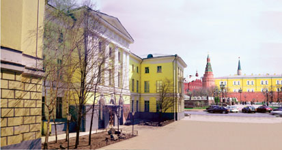

Государственный геологический музей
им. В.И. Вернадского
Музей истории земли
Cтарейший в Москве музей.
Основан по идее М. Ломоносова, дарением Демидовых в 1755г.
Получил современный статус в 1988г..
Научный и просветительский Центр Российской академии наук в области наук о Земле.
Музей, сохраняя исторические коллекции, собранные за 2,5 века со всех континентов мира, в своих экспозициях развивает наследие Вернадского о единстве косного и живого планеты, о ее связи с Космосом, о переходе биосферы в сферу разума - ноосферу - об ответственности человека за состояние окружающей среды.
